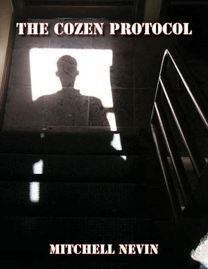

BWS Books
Bookshelf SleuthOn a cold February afternoon, a teenaged girl—hoping to shake the winter blues—paid a visit to the local library. Exploring a rack of older books, she thumbed through a half-century-old yellowed soft cover. Near the book’s center, the curious reader discovered a factual story of a psychic—from her hometown—who accurately predicted a series of explosions that would shake a city to its core. This actual story of domestic terrorism occurred so long ago that only a handful of Milwaukee’s great-great grandparents could recall the events of that tumultuous two weeks in the midst of the Great Depression. Undeterred by the many years that had since passed, Livia Grogan made the most of her three-hour visit to the library that day. She was determined to dig deeper in order to ascertain what she could about the carnage of the brew city bombers, the man who forecasted their exploits, the detective in charge of the investigation, and a citizenry on edge. Bookshelf Sleuth is a non-fictional essay regarding a struggling city during uncertain times. Even though most of those who lived during this era have since departed, Livia Grogan breathes new life into their long-forgotten saga. “Bookshelf Sleuth is an interesting walk through the annals of one of Milwaukee’s most infamous series of crimes,” writes author and former Milwaukee Police Department Homicide Detective Steven Spingola. “The author’s creative inquiry illustrates that, while the faces of the characters change, terrorism, gang problems, and economic uncertainty have been a part of Milwaukee’s social fabric for generations.” The Bookshelf Sleuth is a Kindle e-book available exclusively at Amazon.com for just $3. Buy Book » |
Predators on the Parkway: A Former Homicide Detective Explores the Colonial Parkway MurdersWhen it comes to cold homicides, sometimes the best thing to do is bring in someone from the outside—a fresh set of eyes. That is exactly what the families of Colonial Parkway murder victims did in early June 2010. They called upon Steven Spingola, a former homicide detective with the Milwaukee Police Department. Predators on the Parkway: a Former Homicide Detective Explores the Colonial Parkway Murders is a 29-page magazine expose that provides a thoughtful analysis of each crime scene based on the physical evidence, and interviews with tipsters, the victims’ families and law enforcement veterans. The Predators on the Parkway is a Kindle e-book available exclusively at Amazon.com for just $3. Buy Book » |
The Killer in Our Midst: the Case of Milwaukee’s North Side StranglerFour months prior to the arrest of Walter Ellis, former Milwaukee Police Department Homicide Detective Steven Spingola examined and profiled the unidentified serial killer, dubbed the North Side Strangler. Former assistant U.S. attorney and WTMJ radio talk-show host Jeff Wagner called Spingola’s profile of Ellis “eerily accurate.” Listen to the audio of Steven Spingola’s interview with Jeff Wagner. Known amongst his colleagues as ‘the sleuth with the proof,’ Spingola’s e-magazine expose is available for just $3. Buy Book » |
The Cozen ProtocolMitchell Nevin’s gritty crime mystery, The Cozen Protocol, has all the markings of a truly outstanding novel. The fictional e-book, available exclusively at Amazon.com, pits good versus evil, gang bangers against gang bangers, with street-smart cops battling both the mean streets and opportunistic police administrators. "The book's disclaimer," writes author and former Milwaukee Police Department Homicide Detective Steve Spingola, "states that The Cozen Protocol is a fictional book about two gangs…but for those of you interested in true crime, Nevin's book appears to contain much more fact than fiction." The Cozen Protocol provides an insider’s view of policing, gangs, and the politics involved with wearing a badge. Read excerpts of The Cozen Protocol. The Cozen Protocol is a Kindle e-book available exclusively at Amazon.com for just $2.99. Buy Book » |
Best of Spingola FilesIn Best of the Spingola Files, retired Milwaukee Police Department Homicide Detective Steve Spingola explores several unsolved murders, including the 1979 slaying of Nancy Radbil, the strangulation deaths of over a dozen women, and the homicides of co-eds near a state university. A four-part series looks at the violent acts of an outlaw motorcycle gang, one of which resulted in the tragic death of newspaper delivery boy killed by an improvised explosive device. “During a class I taught” said Spingola, currently an instructor of criminal justice studies, “a handful of students asked why several organizations, like the Innocence Project, seek to overturn murder convictions while only a few groups advocate for the victims of unsolved homicides.” In response, the investigator known amongst his colleagues as ‘the sleuth with the proof,’ developed the Spingola Files Web site. “By reviewing many of these cold case homicides my hope is that someone out there will come forward and provide the clues or other information needed to bring the perpetrators to justice.” Best of the Spingola Files also profiles the life of a one-armed mobster, reviews three interesting books, and picks apart the circumstantial evidence used to charge an Illinois police officer in the so-called ‘honeybee shootings.’ Buy Book » |
American StasiIn the aftermath of the attacks of September 11, 2001, the United States government sought to construct a nationwide surveillance state. To complete is mammoth project, the federal government awarded $350-$500 billion in contracts to over 1,900 private sector corporations, including Lockheed Martin, Acxiom, General Dynamics, and Harris. This newly created ‘security-industrial complex’ installed hundreds-of-thousands of infrared surveillance cameras, provided high-tech equipment that monitors the movements of cellular devices in real time, and gives government agents the ability to create a detailed dossier on 98 percent of adults in just a matter of minutes. Emboldened by the provisions of the USA Patriot Act, military and law enforcement personnel at 74 federally subsidized intelligence fusion centers now monitor the daily activities of millions of Americans 24 hours a day, seven days a week. Miles Kinard’s outstanding magazine exposé, American Stasi: Fusion Centers and Domestic Spying, explores some of the methods and technologies used to spy on the citizenry. “This is scary, eye-opening stuff,” said Steve Spingola, a retired Milwaukee Police Department homicide detective, “and I would not classify myself as a civil libertarian.” Buy Book » |